打图顺序：先剑突下（保命）→ 胸骨旁（PLAX→PSAX）→ 心尖（测 SAVV/TR）→ 胸骨上窝（PDA）。10 分钟出结论，不追求完美测量。
先想明白：这一页只是在回答 5 个问题
| 临床问题 | 用哪个切面回答 | 就认这个数/形状 |
|---|
| ① 血够不够？ | 剑下四腔心（第1步） | 心室贴一起 = 不够 |
| ② 泵有没有劲？ | PLAX + M型（第2步） | FS 28–38% |
| ③ 肺压高不高？ | PSAX + 心尖TR（第3、4步） | D字征 + TR>3 |
| ④ 导管开没开？ | 胸骨上窝（第5步） | 直径>1.5mm |
| ⑤ 脑灌注够不够？ | SVC flow（第6步） | ≥55 mL/kg/min |
五个都正常、血压还低 → 想分布性（血管松）：多巴胺起手。第一次学只记"问题→切面→数字"这三列；
下面每张卡片都是这三列里某一格的展开，看不懂的地方先跳过，不影响值班。
四个标准切面总览 + 操作视频 先看视频再上手
新生儿休克：心源性/分布性/梗阻性的心脏 POCUS 评估（NeoPocusCollab，约36分钟，英文字幕可在视频右下角CC按钮开启）。
时间点中文导航：
| 0:00–3:00 | 开场介绍 |
| 4:00–8:00 | 三个标准切面：PLAX/PSAX/心尖四腔心怎么打，看什么结构 |
| 8:00–10:00 | 低灌注（hypoperfusion）的病理生理：CO=HR×SV，BP=CO×SVR |
| 10:00–15:00 | 新生儿循环特点：心肌未成熟、自主调节、MAP与脑灌注 |
| 15:50–19:00 | 三个标准切面怎么区分休克类型 |
| 19:00–22:00 | 心源性休克：FS下降、节段运动异常、先心（主动脉缩窄/弓中断） |
| 22:00–26:00 | 容量评估：左房大小、IVC、SVC flow |
| 26:00–28:00 | 分布性休克：高动力、低SVR、四肢温暖 |
| 28:00–31:00 | 治疗原则：先纠正可逆因素（酸中毒/低钙/低温），再选药 |
| 32:00–36:00 | 梗阻性：PDA、PPHN、心包填塞；导管前后SpO₂差；PGE1 |
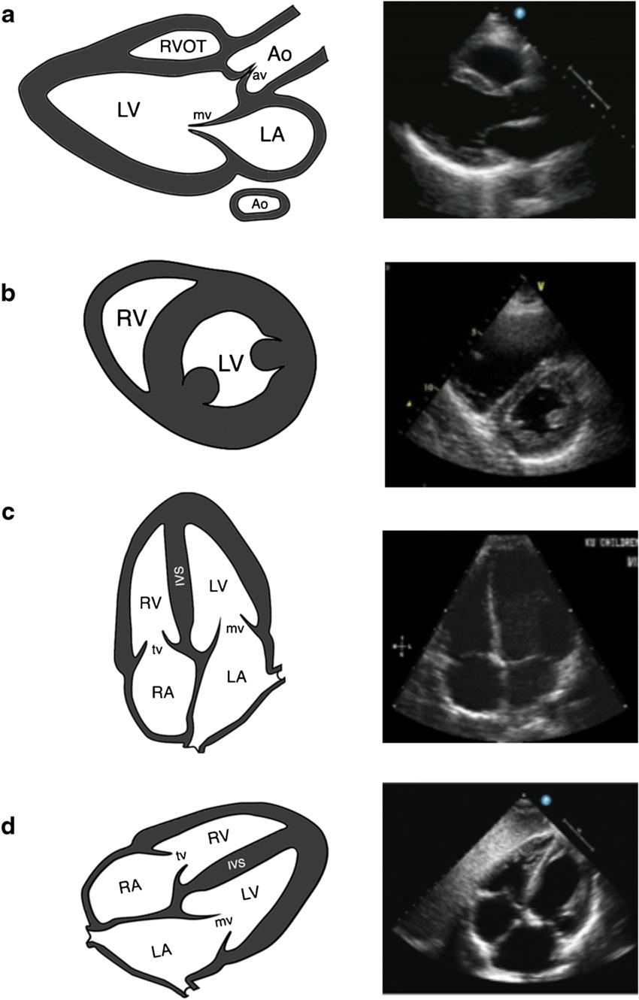
1. 剑突下四腔心 第一步 · 保命筛查
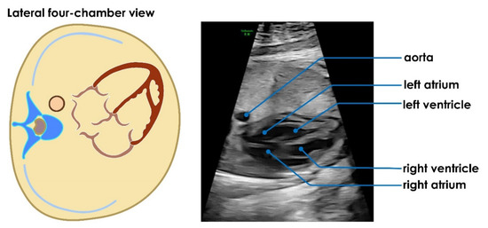
四腔心解剖+超声对照。
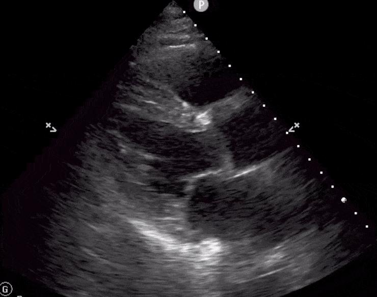
低血容量时：LV小而收缩过度，心内膜收缩期几乎贴一起。
它只回答一个问题：血够不够？顺便救命（看有没有心包积液）。
怎么放（跟着做）：
- 探头横放在剑突下（胸骨最下端的窝），标记点朝左肩
- 先看到肝脏（一片灰色）——这是路标
- 探头轻轻向上翘，四腔心"啪"地出现在屏幕上
屏幕上就找三件事（这一步不用量任何数）：
- 两个心室是不是很小，收缩时心内膜快贴到一起？=血不够（低血容量）→ 先补液 10–20 mL/kg，别急着上升压药
- 右室是不是比左室大一大圈、把室间隔顶过去了？=右心压力大 → 后面第3、4步确认是不是PPHN
- 心脏外面是不是有一圈黑水？=心包积液 → 红旗，立刻叫会诊
坑：探头压太重：婴儿会吐，右房也会被压瘪出假象。手法越轻图越好。
进阶（新手可以先跳过）
- 心轴：室间隔与正中线的夹角，正常约45°（30–60°）
- 卵圆窝瓣摆向左房=正常；持续摆向右房=右房压高
- 剑下切面略逆时针旋转+彩色，可以看房水平分流方向
2. 胸骨旁长轴 PLAX + M型 第二步 · 量FS
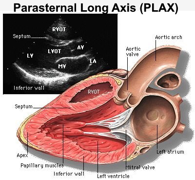
PLAX：超声图（左上）+解剖对照。RVOT→AO→LA排成一线。
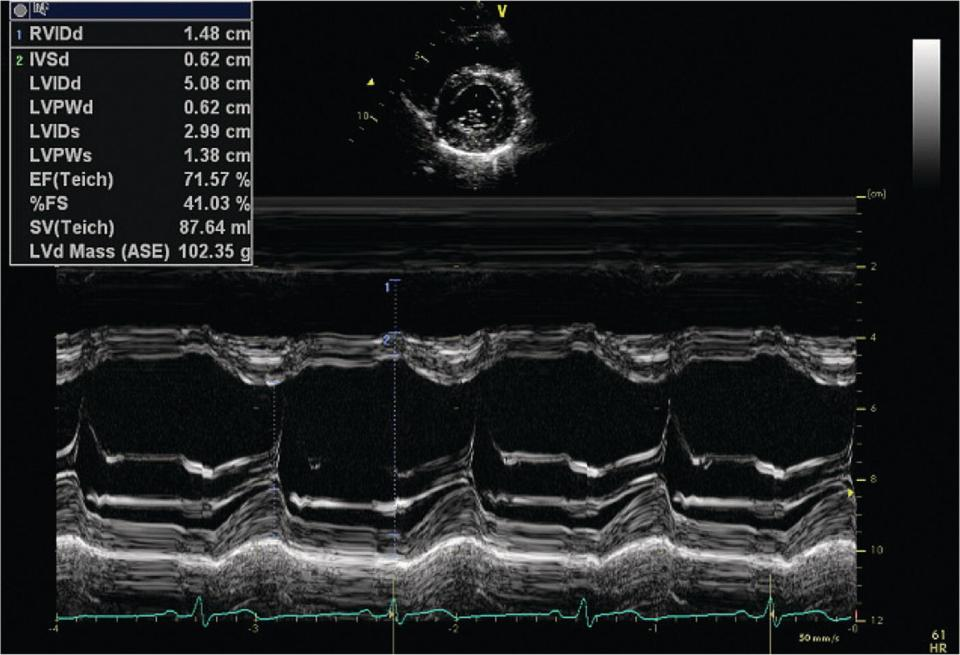
注意：本示例图为成人数值（FS 41%、LVIDd 5.08cm），只示范"怎么量"——新生儿别照抄图上的数：LVEDD约1–2cm、FS正常28–38%。
它回答：左室这个泵，收缩有没有劲？——只量一个数：FS。
怎么放（跟着做）：
- 探头放左乳头上方的肋间，标记点朝右肩（1–2点方向）
- 左右轻轻摆，直到主动脉根排成一条线：RVOT—AO—LA，像"甜甜圈柄"
- 按M-mode键，把竖线放在二尖瓣叶尖下方的腱索水平，让竖线垂直穿过室间隔和后壁
屏幕上找什么：两条相对运动的波浪线（上面室间隔、下面左室后壁）。量最宽的一次（舒张末期LVEDD）和最窄的一次（收缩末期LVESD），FS=（宽−窄）÷宽×100%，多数机器能自动算。
判读（看到什么 = 什么）：
- FS 正常 28–38%；<28% = 泵没劲 → 心源性：纠酸补钙补糖 + 多巴酚丁胺；血压也低 → 换肾上腺素
- FS正常但病人还是差 → 别急着放心，低血容量时FS会"假性正常"，去看第4步的SAVV
- 顺手看LA:Ao：舒张末期，主动脉根内径做分母、紧贴后方的左房径做分子，>1.3 = 左房被PDA灌大了
坑：竖线没垂直室间隔、或放到乳头肌水平=白量。生后头2–3天右室压力高，FS普遍偏低，别急着下"心源性"结论。
进阶（新手可以先跳过）
- 有的书写正常值28–40%，各家略有出入，关键是和自己前几天比趋势
- FS"假性正常"的原理：心室本来就小，收缩幅度看起来不小
- 量LA:Ao前后要用同一标准（含不含肺静脉入口），否则没法追踪对比
3. 胸骨旁短轴 PSAX 第三步 · 看D字征
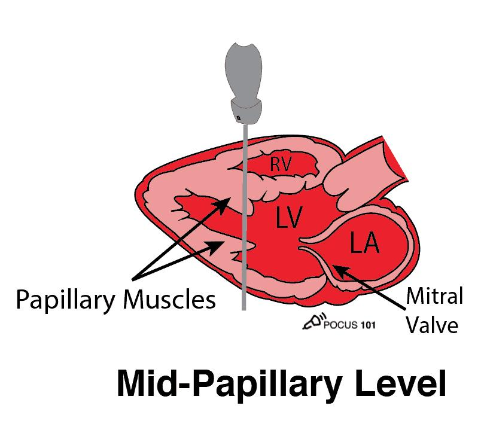
探头位置：胸骨旁，垂直于室间隔。
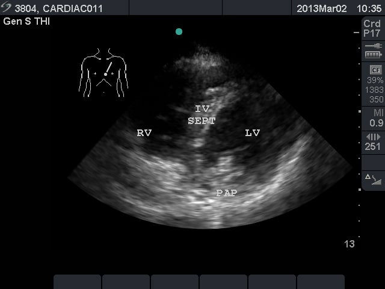
正常：LV圆形，RV在旁边包绕。
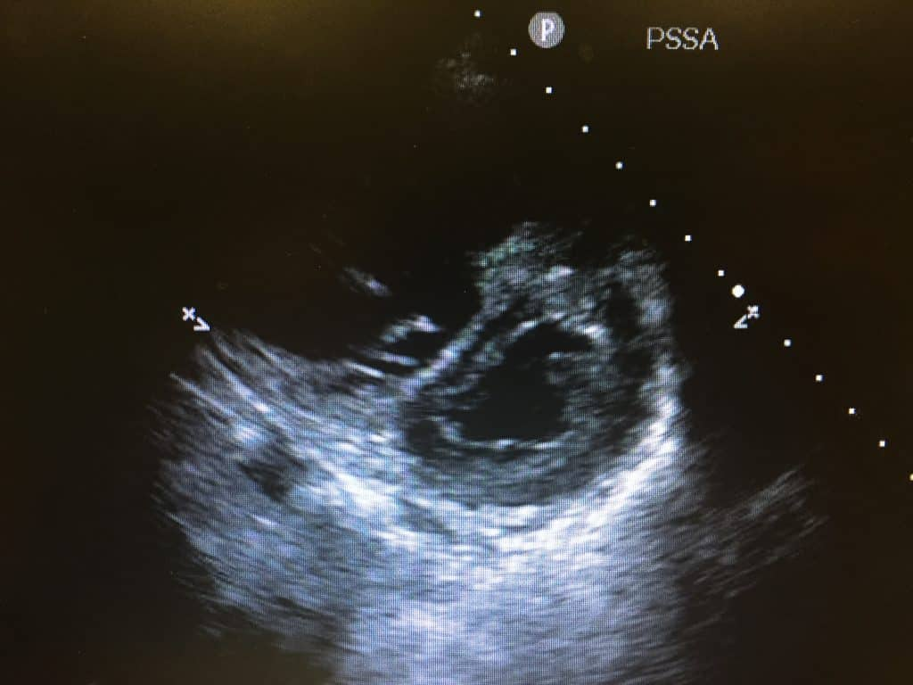
D字征：室间隔变平=右心压力大。
它回答：肺循环压力高不高？——不用量数，看形状。
怎么放（跟着做）：
- 探头位置和PLAX一样，顺时针转90°，标记点朝左肩
- 先停在大血管水平：主动脉变成一个圆"甜甜圈"，右室包在旁边
- 再往心尖方向滑一点到乳头肌水平：左室正圆+两块乳头肌
看什么：左室是圆的还是"D"形的。
判读（看到什么 = 什么）：
- 正圆、室间隔弯向右室 = 正常，肺压不高
- 整个心动周期都变平（D字征） = 右室压力高 → PPHN，去第4步用TR定量确认
- 只在舒张期变平 = 右室血太多（大PDA左向右）→ 去第5步看导管
坑：只看乳头肌水平就下"没有D字征"的结论会漏——D字征在大血管水平更明显，两个水平都要扫。
进阶（新手可以先跳过）
- 大血管水平还能看肺动脉分叉和导管起点
- 左室是正圆时，这一水平也可以做M型FS（备用）
4. 心尖四腔/五腔 第四步 · 量SAVV和TR
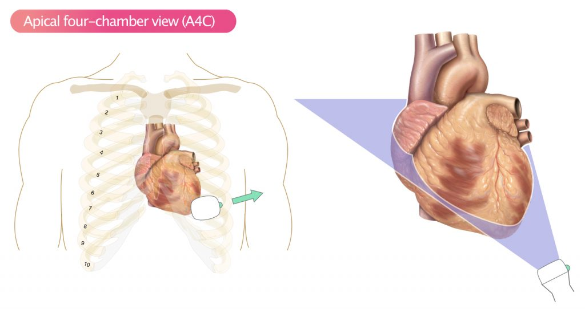
心尖四腔心探头位置：标记点朝左腋下。
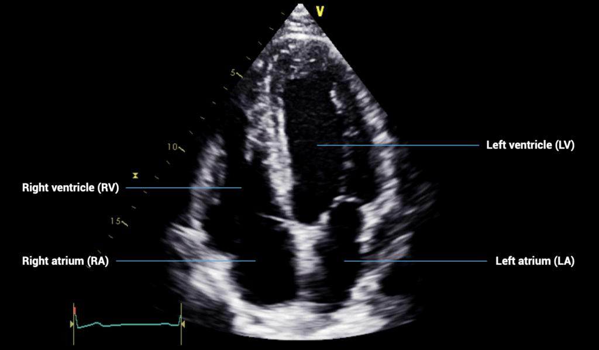
心尖四腔心：TR的CW从这里打。
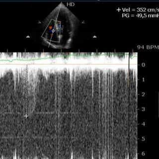
TR CW：v=3.52 m/s。
它回答两件事：每搏量够不够（SAVV）？肺压到底多高（TR）？
怎么放（跟着做）：
- 探头放心尖搏动处（左锁骨中线4–5肋间），标记点朝左腋下（3–4点）
- 四腔心出来后向上翘15°变成五腔心，露出主动脉瓣——这是量SAVV的地方
- 量TR：三尖瓣口开彩色，看到蓝色反流束后，把CW取样线沿射流方向摆平
量SAVV：PW取样门放主动脉瓣刚上方 → 描迹三角形频谱的上缘 → 读出VTI（单位cm）。这就是每次心跳实际打出去的血柱长度。
判读（看到什么 = 什么）：
- SAVV ≥5–6cm 正常；<4.5cm = 每搏量下降——不管FS好不好，都是低心排
- 量TR：TR>3 m/s + 第3步D字征 = PPHN（肺压具体数值见下方进阶）
- 找不到TR很常见——没有反流≠没病，结合D字征和"导管前后SpO₂差>10%"一起判断
坑：CW线没和射流平行，速度会被低估（算出的肺压不准）；取样门放进左室里，VTI会假性偏低。
进阶（新手可以先跳过）
- 肺压定量：PASP=4×v²+RAP（RAP取3–5 mmHg）；PAP/SAP≥0.5=肺压偏高
- 右心功能：Tei=(IVCT+IVRT)/ET，>0.4为差；TAPSE量三尖瓣环侧壁位移，看趋势
- LVO也在这步算：LVO=π×Ao直径²/4×SAVV×心率÷体重，正常170–320 mL/kg/min；有PDA时LVO虚高，别当全身血流
5. 胸骨上窝 PDA切面 第五步 · 导管开没开
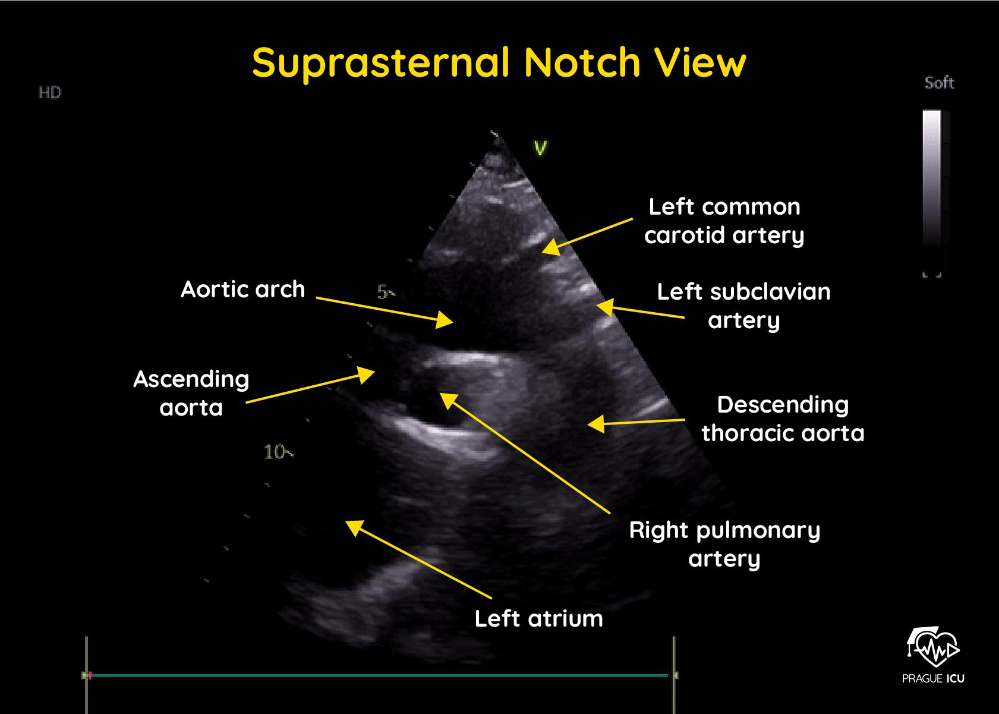
胸骨上窝切面：主动脉弓长轴（"拐杖"样）。
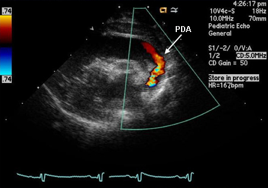
26周早产儿PDA：红色射流从主动脉射进肺动脉。
它回答：动脉导管开着吗？偷走了多少血？
怎么放（跟着做）：
- 探头放胸骨上窝（锁骨上的小窝），标记点朝1点（右颈方向）
- 打出主动脉弓长轴——像一根"拐杖"
- 开彩色多普勒，看拐杖和肺动脉之间有没有异常血流束
看四样：
判读（看到什么 = 什么）：
- 导管直径 >1.5mm = hsPDA（在肺动脉端最窄处量）
- 分流方向：左→右（常见）；右→左或双向 → 想PPHN
- 舒张期也一直往前流 = 分流量大
- 降主动脉舒张期反向血流 = 血被偷走的实锤（肠道缺血风险↑）
坑：处置一句话：限液80–100 mL/kg/d + 布洛芬/对乙酰氨基酚；别加升压药——越缩血管，血越往肺里漏。
进阶（新手可以先跳过）
- 分诊口径（NPE手册）：直径1.5–3mm中度、>3mm大量；LA:Ao 1.5–2.0中度、>2.0大量；Vmax<2m/s=无限制性频谱
- 腹主动脉、腹腔干、肠系膜上动脉中≥2支舒张期反向=显著窃血
- 导管是三维弯曲的，单平面直径常低估——多平面扫最大径
6. SVC flow 上腔静脉血流量 进阶 · 脑灌注金标准
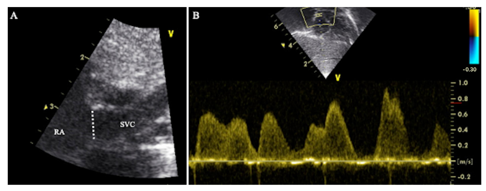
SVC flow测量：左=量直径，右=PW频谱。
它回答：大脑和上半身的灌注够不够？——这是血压看不出来、但它看得出来的事。
怎么放（跟着做）：
- 胸骨上窝/高旁显示上腔静脉长轴，在呼气末量直径
- 剑下/低位肋间用PW取得SVC频谱，描迹VTI
- 公式：SVC flow = π×(直径÷2)² × VTI × 心率 ÷ 体重
读数：
判读（看到什么 = 什么）：
- SVC flow <55 mL/kg/min = 脑灌注不足——哪怕MAP达标（Seri 2004：ELBW血压正常仍可SVC低流量）
- 血压正常的"安稳"宝宝，如果SVC低流量，死亡/伤残风险仍然升高——先看流量，再看压力
坑：生后48小时内最可靠，之后血管难显像；直径和频谱不是同时取的，是这个方法的固有近似。
进阶（新手可以先跳过）
- SVC只代表脑+上半身回流（约4/5来自头颈部），不代表肝肾肠的灌注
- 脑血流有自主调节，SVC低不一定全因心功能差
7. 心包积液（红旗） 任何一步看到 → 立刻处理
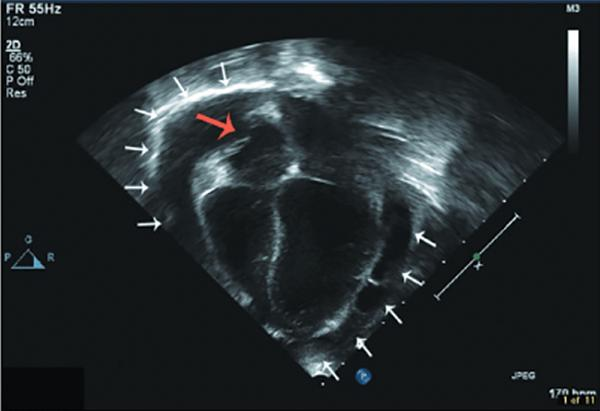
大量心包积液（白箭头）+右房舒张期塌陷（红箭头）=填塞。
- 识别：心脏外面一圈无回声（黑色）暗区，心包腔内
- 右房/右室舒张期塌陷 = 填塞——不是积液量的问题，是压不住了
- 心脏在积液里摆动 = 大量
进阶（新手可以先跳过）
- <
- d
- i
- v
-
- c
- l
- a
- s
- s
- =
- "
- d
- o
- "
-
- s
- t
- y
- l
- e
- =
- "
- c
- o
- l
- o
- r
- :
- v
- a
- r
- (
- -
- -
- r
- e
- d
- )
- "
- >
- <
- b
- >
- 这
- 不
- 是
- 加
- 药
- 能
- 解
- 决
- 的
- ：
- <
- /
- b
- >
- 立
- 即
- 心
- 包
- 穿
- 刺
- ，
- 叫
- 心
- 外
- 科
- /
- 心
- 超
- 会
- 诊
- 。
- <
- /
- d
- i
- v
- >
最后：每个切面只记一个东西
| 切面 | 标记点朝向 | 就记这个 |
|---|
| 1 剑下四腔 | 左肩 | 心室贴一起=血不够；外圈黑水=红旗 |
| 2 PLAX+M型 | 右肩（1–2点） | FS 28–38%，<28%=泵没劲 |
| 3 PSAX | 左肩（转90°） | 全程平=PPHN；只舒张期平=大PDA |
| 4 心尖 | 左腋下（3–4点） | SAVV<4.5=低心排；TR>3+D字征=PPHN |
| 5 胸骨上窝 | 1点 | 导管>1.5mm=hsPDA |
| 6 SVC flow | 胸骨上窝+剑下 | ≥55 mL/kg/min |
| 7 心包积液 | — | 舒张期塌陷=填塞 → 穿刺+会诊 |
其余内容都是这几行的展开。值班时按第1→6步的顺序打，10分钟出结论。
心超名词对照（浅蓝=新生儿必看，浅红=成人不测）
| 缩写 | 英文 | 中文 / 大白话 | 新生儿正常 vs 成人 |
|---|
| ▎ 切面与测量工具 |
| PLAX | parasternal long-axis | 胸骨旁长轴，测 FS、LA/AO | — |
| PSAX | parasternal short-axis | 胸骨旁短轴，看 D 字征 | — |
| A4C/A5C | apical 4-/5-chamber | 心尖四腔/五腔，测 SAVV、TR | — |
| PW / CW | pulsed/continuous-wave Doppler | 脉冲/连续波多普勒，PW测VTI，CW测TR速度 | — |
| ▎ 收缩与流量 —— 新生儿必看 |
| FS | fractional shortening | 短轴缩短率=(LVIDd−LVIDs)/LVIDd | 新生儿 28–38%；成人 25–45%。低血容量时假性正常 |
| VTI | velocity-time integral | 速度时间积分，多普勒包络下面积=一次心跳血流走的距离 | SV = 瓣环面积 × VTI |
| SAVV | aortic valve VTI | 主动脉瓣 VTI，最直接每搏量 | 新生儿 ≥5–6 cm；成人 18–22 cm（差3-4倍，别套成人） |
| RVO/LVO | right/left ventricular output | 右/左室输出量=SV×HR | 新生儿 mL/kg/min；成人 L/min/m²（单位不同） |
| SVC flow | superior vena cava flow | 上腔静脉血流，代表脑+上半身灌注 | 新生儿 >55；成人不测。PDA时LVO骗人，看SVC |
| EF | ejection fraction | 射血分数（Simpson） | 成人核心（<55%心衰）；新生儿不推荐——几何不规则测不准 |
| IVC 变异 | IVC respiratory variation | 下腔静脉呼吸变异度 | 成人 >50%=低血容量；新生儿不可靠（PDA/肺/通气影响） |
| ▎ 压力与分流 —— 新生儿必看 |
| TR | tricuspid regurgitation | 三尖瓣反流，速度越快右室后压越高 | 新生儿 <2.5–3 m/s；生后几天生理性偏高，结合D字征 |
| PASP | pulmonary artery systolic pressure | 肺动脉收缩压=4v²+RAP | 新生儿用PAP/SAP<0.5比值；成人用mPAP>20绝对值 |
| D-sign | D-shaped septum | D字征，LV被压成D形=PPHN | 新生儿PPHN；成人急性肺栓塞 |
| PDA | patent ductus arteriosus | 动脉导管未闭 | 早产儿常见；成人罕见 |
| LA/AO | LA/aortic root ratio | 左房/主动脉根比 | 新生儿 <1.3；成人不测（PDA是早产儿病） |
| E/e' | mitral/annular ratio | 左室充盈压，成人舒张功能 | 成人常用；新生儿不测——参考值未建立 |
| ▎ 临床 |
| MAP | mean arterial pressure | 平均动脉压 | 新生儿 ≥胎龄周数；成人 ≥65 |
| HR | heart rate | 心率 | 新生儿 120–160；成人 60–100 |
| PPHN | persistent PHN | 新生儿持续肺动脉高压 | 新生儿特有 |
| iNO | inhaled nitric oxide | 吸入NO，PPHN靶向药 | 新生儿一线 |
高频坑
- 只盯血压：MAP ≥ GA ≠ 灌注足够；ELBW 正常 MAP 仍可 SVC 低流量
- "肾剂量多巴胺"：新生儿 5 μg/kg/min 已出 α 效应，不存在
- 多巴酚丁胺升 BP：它改流量不改压力，BP 不升但 CO 上去就是有效
- 米力农当急救药：起效 30–60 min，BP 低时禁用
- 激素常规加：治疗前皮质醇>15 者加激素死亡 OR 26.3（Peeples 2017）
- 照搬 PICU 剂量：去甲肾 0.05–0.5，不是 2
- 忽视可逆因素：pH<7.2、离子钙<1.0、低糖、低温未纠正，药无效